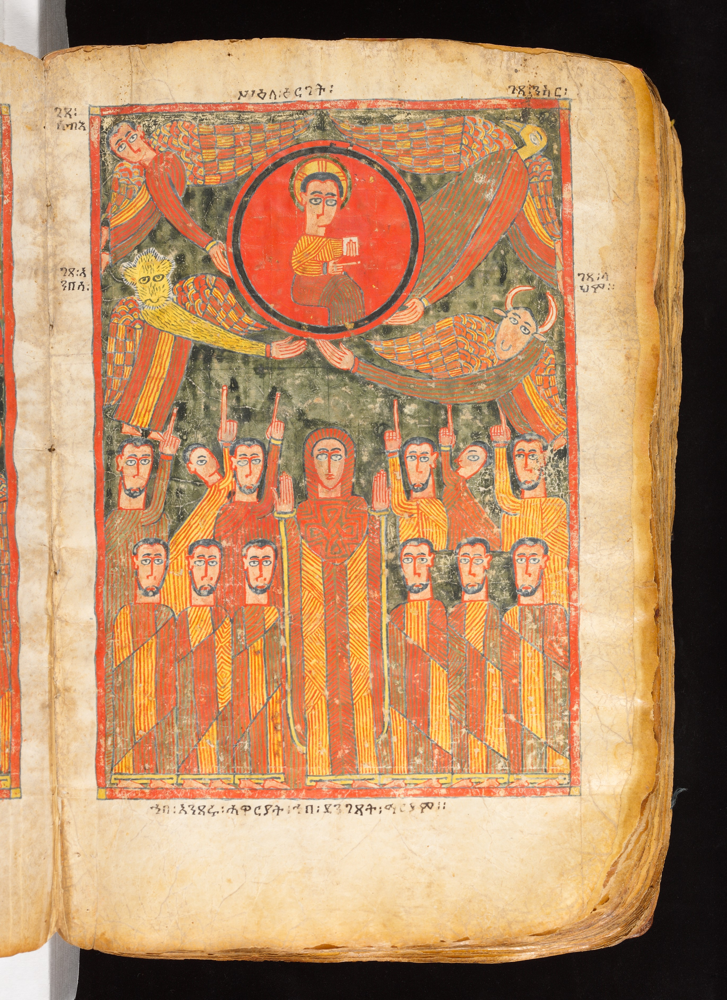
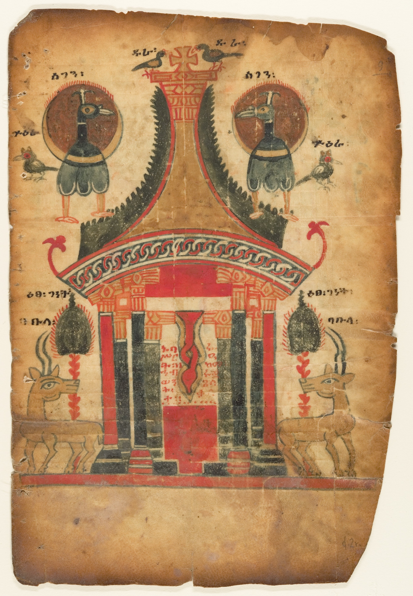
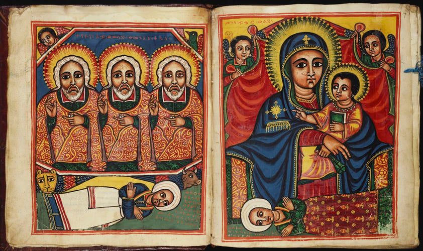
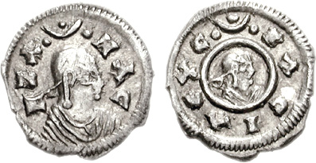

1. A pergunta que abre o livro
Que transformação merece ser chamada de arrependimento? Basta sentir culpa, ou é preciso que a vida mude? E, quando um poder tenta obrigar alguém a agir contra sua consciência, o que sustenta a resistência? 2 Meqabyan aproxima essas perguntas por meio de histórias de violência, mudança, transmissão de ensinamentos e esperança de justiça.
A narrativa não começa com um herói sem falhas. Meqabis é apresentado como conquistador de Moab, ligado à devastação de Jerusalém. O livro descreve com linguagem religiosa a catástrofe, o sofrimento dos vulneráveis e a arrogância de quem festeja a destruição. O choque da primeira cena prepara a pergunta que move o restante: o agressor pode mudar, e como reconhecer uma mudança real?

2. Contexto histórico e lugar na tradição etíope
Meqabyan — também escrito Mäqabeyan ou Meqabyān — é o nome de três livros preservados na tradição bíblica etíope. A Igreja Ortodoxa Etíope Tewahedo reconhece um cânon amplo, cuja história e organização não são idênticas às dos cânones católico romano, protestante ou ortodoxo bizantino. Reconhecer essa diversidade é uma descrição histórica, não um juízo sobre a fé de qualquer comunidade.
O título semelhante a “Macabeus” pode confundir. Os três Meqabyan não recontam a revolta dos Macabeus descrita nos livros gregos de 1 e 2 Macabeus. No livro aqui estudado, Meqabis é um governante moabita; seu papel e identidade não correspondem aos mártires conhecidos de outras obras macabeias. A narrativa tem ecos de temas bíblicos — pecado, juízo, arrependimento, fidelidade — mas também apresenta formulações próprias.
A data e autoria são incertas. Uma introdução a uma tradução de trabalho propõe uma data antiga, mas reconhece que não se conhece com segurança nem o autor nem a época precisa. Portanto, o estudo não trata essa proposta como consenso acadêmico nem atribui os episódios a acontecimentos verificáveis. O texto é fonte segura para observar uma tradição teológica e literária; isoladamente, não confirma a ocorrência dos eventos narrados.
3. A memória escrita e visual etíope
As imagens abaixo são objetos reais de arte e escrita etíopes preservados em acervos. Elas tornam visível a vida manuscrita e cristã da região, mas não são miniaturas de acontecimentos de 2 Meqabyan. Separar ilustração contextual de evidência direta evita transformar uma imagem bonita em prova histórica.



4. Mapa narrativo em quatro atos
As divisões abaixo são um guia para acompanhar temas, não uma proposta de estrutura original do autor. As edições consultadas apresentam 21 capítulos, mas a numeração pode variar entre versões e arranjos litúrgicos; ao citar, indique sempre a edição.
Meqabis destrói; o profeta o chama à responsabilidade. O rei se arrepende, muda sua conduta e passa a ensinar a lei.
Após a morte do rei, novos governantes e líderes religiosos são advertidos. O livro denuncia arrogância, idolatria, cobiça e abuso.
Os filhos de Meqabis recusam a coerção e morrem. A narrativa defende a esperança na ressurreição do corpo e da alma.
Imagens de semente, terra e colheita conduzem a reflexões sobre mortalidade, julgamento, obras e riqueza injusta.
Essa forma de acompanhar a obra dá ao leitor um fio narrativo; não substitui a leitura dos capítulos. As traduções disponíveis são de natureza diferente e algumas se declaram provisórias. Os links nas referências permitem conferir o texto integral em inglês e sua introdução metodológica.
5. Meqabis: violência, confronto e mudança
Da força ao espelho moral
Nos capítulos iniciais, o conquistador aparece associado à violência e à destruição de Jerusalém. O profeta Re’ay o confronta: armaduras, cavalos e exércitos não tornam ninguém invulnerável ao juízo moral. O texto usa imagens intensas de fragilidade para desmontar a pretensão de domínio absoluto.
O rei não responde com uma justificativa política. Ele se cobre de cinzas, chora e admite ter vivido em orgulho e ignorância. O gesto narrativo é de humilhação: o governante aceita deixar de ser o centro da verdade. Mas o livro não para na emoção do momento.
Arrependimento como prática
Meqabis recebe instrução, abandona ídolos e práticas mágicas e reorganiza a casa. As crianças cativas de Jerusalém, antes vítimas de sua campanha, passam a ensinar a lei; algumas recebem funções de confiança e cuidado na educação dos filhos do rei. Essa inversão é significativa: a palavra daqueles que foram dominados torna-se fonte de orientação para o antigo dominador.
O sinal da mudança, então, inclui atitudes e relações: abrir mão de práticas anteriores, aprender com quem foi ferido, mudar o uso do poder e formar uma nova geração. Como leitura literária e ética, isso é mais exigente que dizer “senti muito”. O texto, contudo, não detalha reparação completa às vítimas nem oferece um processo moderno de justiça restaurativa; não devemos preencher esse silêncio com suposições.
6. Uma mudança que precisa atravessar gerações
Depois da morte de Meqabis, o poder passa a Tsiruts’aydan (com variantes na grafia). A nova autoridade promove idolatria e exige conformidade. O contraste narrativo não é simplesmente entre dois reis; é entre uma mudança que tentou formar hábitos e instituições e um novo ambiente político que tenta desfazê-la.
O que uma pessoa transforma pode ser frágil quando depende apenas de sua presença. A narrativa mostra os filhos recebendo uma herança de ensinamentos, mas também enfrentando escolhas que o pai já não pode fazer por eles. O legado moral não funciona como proteção automática: ele oferece linguagem e exemplo, sem retirar a liberdade nem o risco.
7. Filhos, coerção e fidelidade
Nos capítulos 13–14, os filhos de Meqabis recusam o sacrifício oferecido a ídolos e são mortos por sua decisão. O texto interpreta sua morte à luz da ressurreição; a cena pertence a uma narrativa de martírio. Não é o mesmo episódio da mãe e dos sete filhos de 2 Macabeus 7, nem há base para confundir seus personagens.
Uma leitura responsável honra a coragem sem transformar martírio em obrigação para quem sofre violência. Ninguém deve ser aconselhado a permanecer em perigo, aceitar abuso ou buscar a morte para provar fé. O relato trata de personagens em uma situação extrema; o cuidado contemporâneo inclui proteção, apoio comunitário, busca de segurança e direito de pedir ajuda.
O livro enfatiza que o poder político pode controlar corpos, mas não definir sozinho o valor moral de uma pessoa. É uma afirmação teológica de resistência à tirania. A aplicação atual pode ser defender a liberdade de consciência e proteger os vulneráveis, sem romantizar dor ou usar a fé para silenciar quem pede socorro.
8. Morte, ressurreição e justiça
Na sequência, o texto argumenta longamente em favor da ressurreição da pessoa inteira. A morte parece dissolver beleza, força, riqueza e posição. A esperança religiosa responde que a vida não termina no túmulo e que as obras humanas serão avaliadas por um juízo que não dá privilégio automático a reis ou ricos.
As imagens são concretas: semente que cai na terra, planta que volta a crescer, chuva que desperta o solo. Nos capítulos finais, a própria terra é figurada como lugar que recebeu corpos e um dia os devolverá. A metáfora não é uma explicação científica da ressurreição; ela dá forma poética a uma esperança teológica e a uma afirmação de justiça.
Filosoficamente, a ressurreição responde ao problema da injustiça que fica sem reparação dentro da vida observável: se tiranos morrem sem responder e vítimas morrem sem reconhecimento, a ordem moral parece incompleta. O livro afirma que a morte não encerra a prestação de contas. Essa é uma convicção religiosa, não um fato que a historiografia possa provar.
Psicologicamente, a ideia de que a vida tem peso e memória pode sustentar quem lamenta ou vive diante de injustiças. Mas não devemos presumir como qualquer pessoa enlutada deve sentir, nem usar a esperança futura para apressar o luto. A presença, a escuta e a ajuda concreta continuam necessárias.
9. O que fica quando o poder passa?
O capítulo 21 pergunta onde estão os que acumularam riqueza por violência e fraude. Ouro, casas, rebanhos e prestígio não garantem permanência. A morte nivela status; a justiça divina, na lógica do livro, avalia o que foi feito com os recursos e com as pessoas.
Essa crítica não condena possuir bens por si só. Seu alvo é o acúmulo que nasce da extorsão, do roubo e da exploração, bem como a ilusão de que o dinheiro torna alguém imortal. Para hoje, a pergunta prática não é “ter riqueza é errado?”, mas “como foi obtida, que relações sustenta e quem paga seu custo?”.
O fechamento também retoma a responsabilidade comunitária: as leis sobre refúgio e julgamento de homicídios distinguem intenção e acidente. Em meio à retórica escatológica, aparece uma preocupação com discernimento e devido exame dos fatos. A justiça não deve confundir erro involuntário com violência deliberada.
10. Três camadas de leitura
| Camada | O que podemos dizer | O que evitar |
|---|---|---|
| Contexto histórico | Meqabyan é transmitido na tradição cristã etíope; data, autoria e relação com eventos externos são incertas. Manuscritos etíopes mostram uma cultura religiosa de livros muito rica. | Tratar os nomes, campanhas ou datas da narrativa como fatos comprovados sem documentação independente. |
| Interpretação bíblica | O livro une juízo, arrependimento, fidelidade, ressurreição e crítica à riqueza injusta. | Confundir 2 Meqabyan com 2 Macabeus ou projetar nele uma única leitura de todas as igrejas. |
| Aplicação pessoal | Perguntar se o arrependimento muda práticas, como o poder trata os vulneráveis e o que deixamos para a próxima geração. | Culpar vítimas pelo sofrimento, recomendar que alguém aceite abuso ou converter a esperança religiosa em previsão factual. |
11. Diálogo filosófico e psicológico
Arrependimento, culpa e reparação
O relato distingue, ao menos literariamente, emoção e mudança: Meqabis chora, mas também reorganiza práticas e relações. Em termos atuais, culpa pode alertar que houve dano; só se torna moralmente fecunda quando conduz a responsabilidade e reparação possível. Não temos evidência para diagnosticar o personagem ou atribuir ao livro um método terapêutico.
Autoridade e consciência
Os filhos resistem ao governante porque entendem que a consciência não deve ser comprada ou forçada. O texto apresenta a resistência em chave religiosa. Em linguagem pública contemporânea, podemos reconhecer o valor da liberdade de consciência e do limite ao poder estatal sem exigir que todos compartilhem da mesma teologia.
Esperança e memória
A ressurreição é uma resposta confessional à mortalidade e à justiça incompleta. Ela pode permitir imaginar que a história não pertence definitivamente aos vencedores; também pode ser instrumentalizada para adiar a justiça possível agora. A tensão ética do leitor é sustentar esperança e, ao mesmo tempo, agir contra danos concretos no presente.
Riqueza, legado e finitude
A crítica do capítulo 21 convida a medir o legado por relações e atos, não por acúmulo. A consciência da finitude pode reduzir a fantasia de controle absoluto. Isso não significa desprezar planejamento ou conforto material: significa perguntar a serviço de quem e de quê eles estão.
12. Leitura ética e perguntas pessoais
O texto usa linguagem severa para explicar sofrimento como juízo divino. Essa explicação pertence ao horizonte teológico do livro e precisa ser lida com cuidado. Aplicada sem discernimento, pode ferir pessoas que já sofrem. Tragédias não autorizam concluir que uma vítima “mereceu” o que aconteceu.
- Mudança: que prática concreta mostraria que um pedido de perdão é mais do que palavras?
- Poder: em que relações a autoridade precisa ouvir a voz daqueles que antes silenciou?
- Consciência: que limites impedem que a pressão de um grupo ou governante defina o que é certo?
- Esperança: como a fé na justiça futura pode fortalecer ações justas no presente, sem substituí-las?
- Legado: o que desejo transmitir: bens, hábitos de cuidado, coragem, humildade ou abertura para aprender?
- Finitude: que uso de tempo, dinheiro e influência faz sentido se nenhum deles é permanente?
Síntese: 2 Meqabyan conduz do abuso à possibilidade de mudança, da mudança à transmissão de uma memória, e da coerção à esperança de que a morte não terá a última palavra. Sua leitura mais cuidadosa mantém juntas a profundidade da teologia, a incerteza histórica e a obrigação de proteger pessoas reais no presente.
13. Fontes e leituras
As traduções abaixo ajudam a acompanhar o livro completo, mas não têm o mesmo status editorial. A tradução em PDF de trabalho traz notas que reconhecem escolhas incertas e caráter provisório; a leitura online apresenta outra versão em inglês. Compare-as com cautela e registre qual edição está usando.
- The Second Book of Meqabyan — texto em ge’ez e tradução inglesa de trabalho, com introdução e notas. A própria edição recomenda cautela com a versão inglesa e informa suas fontes.
- 2 Meqabyan — tradução inglesa online com capítulos. A página informa que modernizou uma tradução do ge’ez; serve para consulta textual, não como edição crítica.
- Translation Insights & Perspectives — notas sobre textos e tradução na tradição etíope.
- Mikre-Sellassie Asale, “The Ethiopian Orthodox Tewahedo Church Canon of the Scriptures: Neither Open nor Closed” (2016).
- The Met — Livro dos Evangelhos etíope, fim do século XIV/início do XV, objeto 317618.
- The Met — folha de Evangelho etíope, primeira metade do século XIV, objeto 477148.
- Wikimedia Commons / Royal Collection Trust — manuscrito “Milagres de Jesus”, licença CC0.
- Wikimedia Commons — moeda do rei Ezana, dados e licença.
Sobre as imagens: os arquivos necessários estão no pacote offline. Todas são imagens reais de objetos históricos etíopes, mas nenhuma é apresentada como página identificada de 2 Meqabyan. A obra específica merece uma imagem apenas quando sua identificação e procedência puderem ser confirmadas.